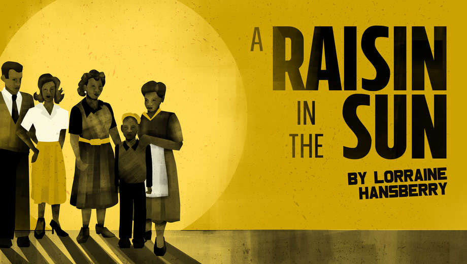

Welcome
This website is about the social issues of housing and how A Raisin in the Sun explores that.
Use the buttons to explore how this play examines the 1950s Chicago housing issues.
A Raisin in the Sun Connection
A Raisin in the Sun by Lorraine Hansberry debuted on Broadway in 1959. The story explores the lives of an African American family that faces housing discrimination. The Younger family's dream of moving to a better neighborhood is met with resistance, reflecting the real-life segregation that kept Black families from economically improving their situation. The Youngers' struggles in the book symbolize the struggles that many families still face today.
Chicago's Segregation by Housing
Intro
Chicago has been one of the most segregated cities in the U.S. It has a legacy of discriminatory housing policies. In the 1930s, government-backed maps marked Black neighborhoods as "hazardous" for investments. As a result, many people were forced into high-priced housing with terrible living conditions. Even today, Chicago maintains its division.
Statistics
Between 1880 and 1940, racial segregation in the U.S. doubled, as shown in the graph. This sudden increase in residential segregation was due to discriminatory practices that limited Black families’ housing choices. A key point from the NBER (National Bureau of Economic Research) study is that segregation was caused by racial violence, zoning laws, and restrictive covenants.
Redlining
The map is a historical redlining map of Chicago, a city that has been, and still is today, practicing discriminatory housing policies. Redlining is a practice used by banks to mark certain neighborhoods as high-risk for investment. As shown on the map, areas shaded in red were denied access to homeowners, most of which were Black neighborhoods. This prevented Black families from building wealth through homeownership. At the same time, white areas were marked blue and green, telling buyers they were safe to invest in. This systematic discrimination confined African Americans to overcrowded and underfunded neighborhoods, reinforcing racial segregation and economic disparities.
Housing Issues In Chicago Today
Intro
Even after the outlawing of practices like redlining, Chicago remains one of the most segregated cities in the U.S., with deep-rooted racial housing disparities continuing to affect communities of color. The legacy of redlining has left many Black and Latino communities with few opportunities for homeownership. Even today, discriminatory lending practices, unfair tax assessments, and gentrification only further these issues.
Interactive Map
Chicago is still segregated almost 60 years after redlining’s outlawing. Looking at the interactive map, we can see that the North Side areas of Chicago are predominantly white, while the South Side is mostly Black, with usually very little mixing. This pattern of housing discrimination is not coincidental but the culmination of years of racial discrimination, redlining, and systematic housing policies. The map also highlights disparities in infrastructure and investments, as historically redlined areas receive less development, underfunded schools, and high rates of poverty.
Homes

Although it's true that Chicago is still highly segregated, it has improved greatly in the past couple of years. Home prices are more equal, like prices for North Side Chicago and South Side Chicago. In North Side Chicago, home prices in neighborhoods like Lincoln Park are around $900,000, with the median household income being $135,000. This means the cost of a home is roughly 6.6 times the median income. In contrast, neighborhoods in the south like Englewood have a much lower median home price of $147,000, while household income is $30,163. Even though homes in Englewood are cheaper, with the cost of a home being 4.0 times the median income, prices in neighborhoods such as Englewood have gone up greatly, with sale prices increasing by 42.7% since last year, allowing more people to gain wealth. Although home prices are getting better, there still remains the issue of housing loans, with most loans going to majority-white neighborhoods. In 2022, 15% of Black mortgage applicants were denied, nearly twice the city-wide average of 8.3%. Black homebuyers also face slightly higher interest rates. While progress has been made in closing the gap between housing prices in different areas of Chicago, challenges still remain in ensuring equal access to homeownership opportunities and financial resources for all communities.